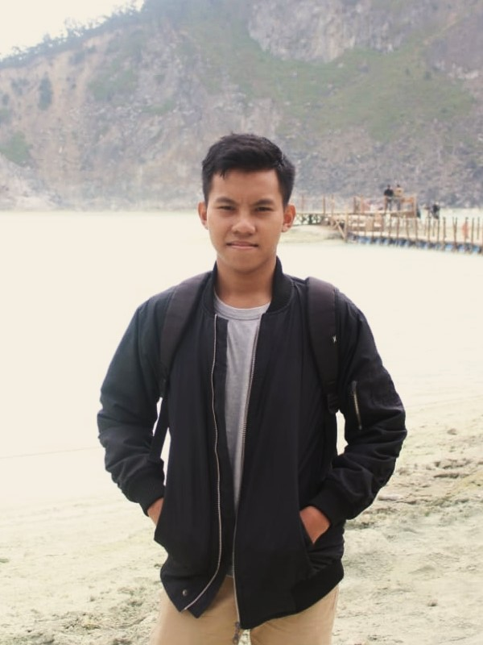

About Me
|  |
Muhammad Rizqi Akbar |
|
|
A fresh graduate majoring in Informatics Computer Science. Interested in the world of programming, especially Web Development. I also learn to develop application from designing in UI/UX stage until the final part. I think being a programmer is challenging for me. |
||
| Education | Universitas Telkom, Informatics (2018–2022) | |
| Work |
Telkom University Internship (Bandung, Indonesia) as Web Developer (2021)Project with Lecturer creating a website who can detecting document similarity. I responsible for making prototype design and build front-end page |
|
| Motto | "Tetaplah merasa bodoh" | |